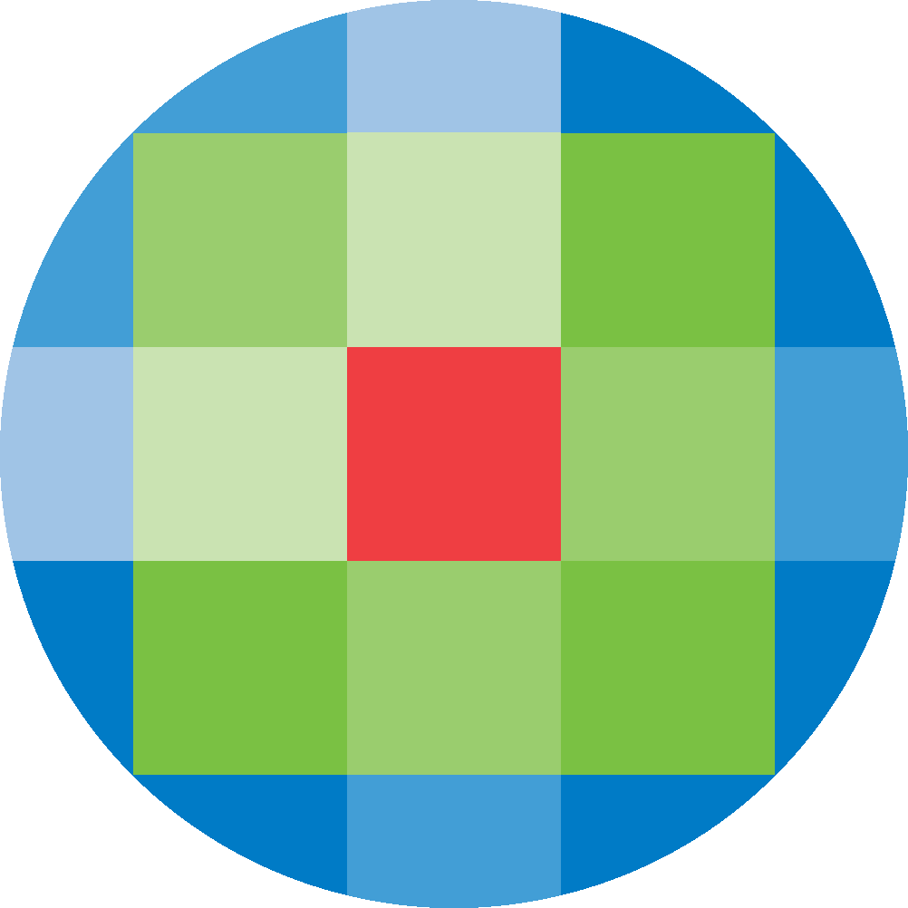
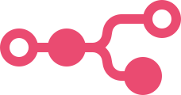

Finance, IT en AI voor het mkb
Financieel inzicht, automatisering en AI-toepassingen voor mkb en zzp. Minder tijd aan administratie, meer zicht op hoe uw bedrijf ervoor staat.
Onze werkwijze
01
Financieel inzicht
Het begint bij een boekhouding die goed is ingericht. Synomic implementeert uw boekhoudpakket of zet het recht, met een rekeningschema en btw-instellingen die passen bij uw bedrijf. Daarmee ligt de basis voor betrouwbare cijfers. 02Automatisering
Op die basis automatiseren we het werk dat elke week of maand terugkomt: factuurverwerking, urenregistratie, offertes en de rapportage. Synomic koppelt uw systemen, zodat gegevens nog maar één keer worden ingevoerd en uw cijfers vanzelf bijgewerkt worden. 03AI-toepassingen
Daarbovenop bouwen we AI-toepassingen die al deze processen versnellen. Bijvoorbeeld het uitlezen van facturen en inkomende post, of een kennisbank die antwoord geeft uit uw eigen documenten.Software waar Synomic dagelijks mee werkt
Staat uw pakket er niet bij? Vrijwel alles met een API laat zich koppelen.


Tools van Synomic
Synomic bouwt eigen tools die processen voor ondernemers sneller en eenvoudiger maken.
Een half uur, en u weet of het loont
Daarna weet u wat de eerste stap kost. U overlegt rechtstreeks met degene die de oplossing bouwt.